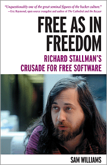

|  |
Free as in FreedomRichard Stallman's Crusade for Free SoftwareBy Sam WilliamsMarch 2002 0-596-00287-4, Order Number: 2874 240 pages, $22.95 US $34.95 CA |
Appendix A
Terminology
For the most part, I have chosen to use the term GNU/Linux in reference to the free software operating system and Linux when referring specifically to the kernel that drives the operating system. The most notable exception to this rule comes in Chapter 9. In the final part of that chapter, I describe the early evolution of Linux as an offshoot of Minix. It is safe to say that during the first two years of the project's development, the operating system Torvalds and his colleagues were working on bore little similarity to the GNU system envisioned by Stallman, even though it gradually began to share key components, such as the GNU C Compiler and the GNU Debugger.This decision further benefits from the fact that, prior to 1993, Stallman saw little need to insist on credit.
Some might view the decision to use GNU/Linux for later versions of the same operating system as arbitrary. I would like to point out that it was in no way a prerequisite for gaining Stallman's cooperation in the making of this book. I came to it of my own accord, partly because of the operating system's modular nature and the community surrounding it, and partly because of the apolitical nature of the Linux name. Given that this is a biography of Richard Stallman, it seemed inappropriate to define the operating system in apolitical terms.
In the final phases of the book, when it became clear that O'Reilly & Associates would be the book's publisher, Stallman did make it a condition that I use "GNU/Linux" instead of Linux if O'Reilly expected him to provide promotional support for the book after publication. When informed of this, I relayed my earlier decision and left it up to Stallman to judge whether the resulting book met this condition or not. At the time of this writing, I have no idea what Stallman's judgment will be.
A similar situation surrounds the terms "free software" and "open source." Again, I have opted for the more politically laden "free software" term when describing software programs that come with freely copyable and freely modifiable source code. Although more popular, I have chosen to use the term "open source" only when referring to groups and businesses that have championed its usage. But for a few instances, the terms are completely interchangeable, and in making this decision I have followed the advice of Christine Peterson, the person generally credited with coining the term. "The `free software' term should still be used in circumstances where it works better," Peterson writes. "[`Open source'] caught on mainly because a new term was greatly needed, not because it's ideal."
{kind=link}